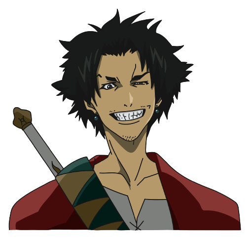
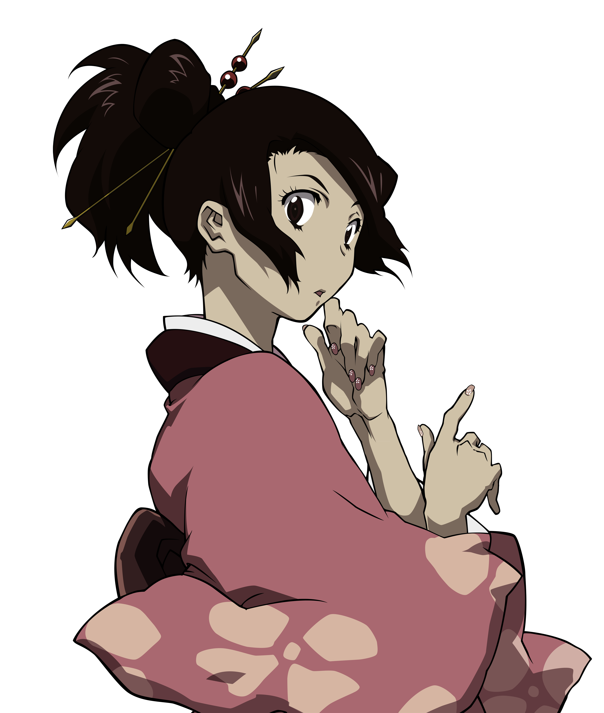
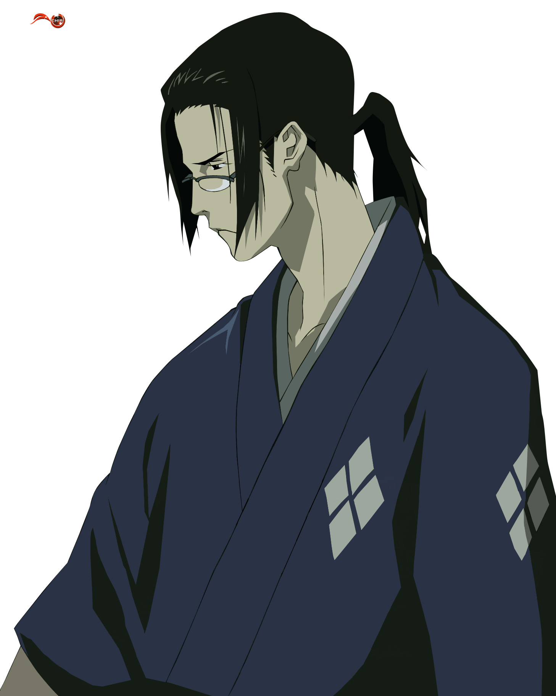

-
Mugen
HP 870
Descrição
De uma rapidez fulgurante e uma força, técnica e agilidade fora do comum, percorre o Japão sem saber o porquê. Habituado muito jovem a esclarecer-se muito único, demonstra muita técnica na arte da fuga. Mugen desde muito pequeno entrou em uma gangue de piratas que roubava para viver. Mugen teve que fazer várias escolhas na sua vida, e dentre elas nem todas ele escolheu bem. Vindo de Okinawa segue sua Jornada com seus mais novos companheiros.
-
Fûu
HP 320
Descrição
Uma jovem alegre e espirituosa, sua ocupação é uma faz tudo devido sua constante mudança entre empregos de meio período, iniciando a obra trabalhando como uma garçonete. Um alívio cômico recorrente é Fûu temporariamente engordar depois de comer bastante.
-
Jin
HP 850
Descrição
O oposto de Mugen, sendo um ronin calmo e austero viajando pelo Japão após forçadamente matar seu mestre, adotando o uso de óculos para se disfarçar. Ele é um mestre em mujushinken, um estilo de kenjutsu criado no começo do período Edo por Harigaya Sekiun.